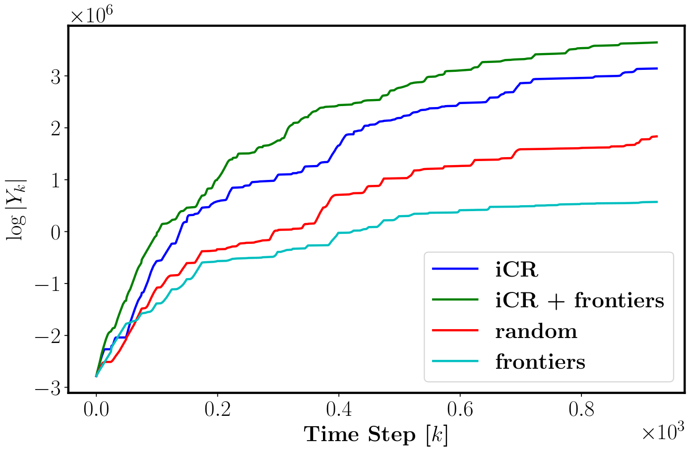
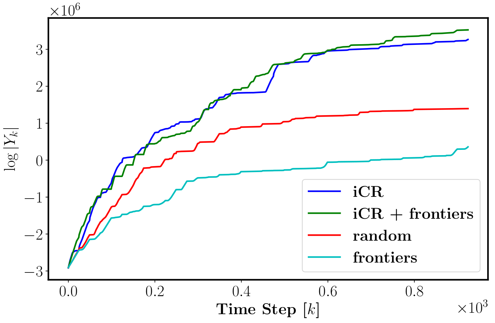

This work develops iterative Covariance Regulation (iCR), a novel method for active exploration and mapping for a mobile robot equipped with on-board sensors. The problem is posed as optimal control over the SE(3) pose kinematics of the robot to minimize the differential entropy of the map conditioned the potential sensor observations. We introduce a differentiable field of view formulation, and derive iCR via the gradient descent method to iteratively update an open-loop control sequence in continuous space so that the covariance of the map estimate is minimized. We demonstrate autonomous exploration and uncertainty reduction in simulated occupancy grid environments.
In this work, we develop a new forward-backward gradient computation technique to minimize the differential entropy of an uncertain environment and construct the map using on-board sensors.
Approach
First, we consider the robot motion model by SE(3) pose kinematics and a nonlinear sensor model with an additive Gaussian noise. Under a Gaussian prior over the map state and its Bayesian evolution along a sensing trajectory, the differential entropy is proportional to the log determinant of the covariance matrix at the final time.
Next, to ensure that the covariance matrix evolution is differentiable with respect to the control sequence, we introduce a new differentiable field of view formulation for the sensing model, providing a smooth transition from unobserved to observed space in the environment.
Finally, an optimal control sequence is obtained by the explicit gradient descent, through an iteration of forward-backward gradient computation to optimize multi-step control input sequences over the SE(3) pose kinematics.
Along with the obtained optimal robot trajectory, an occupancy grid map is constructed by implementing Extended Kalman Filter.
Results
 
Video
Acknowledgements
We gratefully acknowledge support from ARL DCIST CRA W911NF-17-2-0181 and ONR SAI N00014-18-1-2828.
This webpage template was borrowed from Thai Duong.